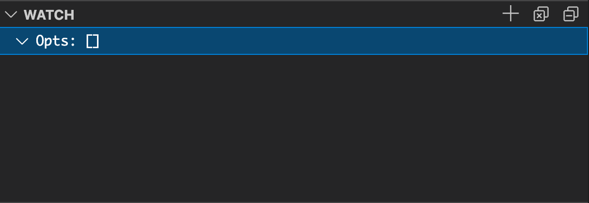
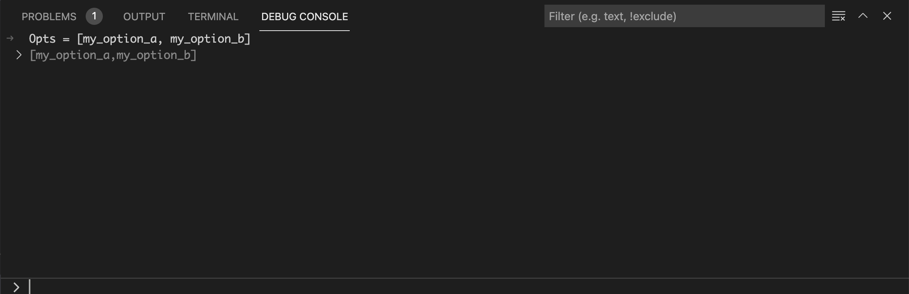
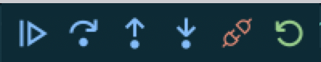
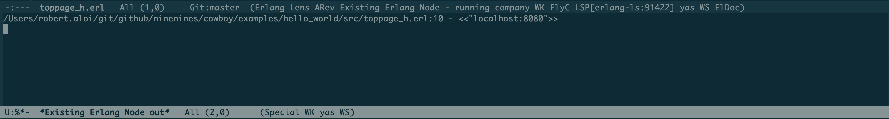

How To: Use the Debugger
Erlang LS provides debugging functionalities via the Debug Adapter Protocol, in short DAP. Given the editor-agnostic nature of the protocol, debugging is available in all text editors and IDEs which support the DAP protocol. Here is what a debugging session looks like in Emacs:

The current underlying implementation is based on the Erlang interpreter which comes with Erlang/OTP. Incidentally, the official OTP Debugger is also powered by the same interpreter.
In this tutorial we will bootstrap a sample project and see how we can debug our code using Erlang LS.
Install the debugger
Debugging functionalities are provided in Erlang LS via a separate
executable (an Erlang escript) named els_dap.
The executable is bundled with the Erlang LS extension, so it does not require any additional installation steps. You can configure the Erlang LS extension to use a custom version of the debugger by specifying a different DAP Path:
Extension Settings > DAP Path
If you are using Emacs, chances are that you are building Erlang LS
from source. To produce the els_dap escript:
rebar3 as dap escriptize
Or simply:
make
You will then find the els_dap escript in:
_build/dap/bin/els_dap
Ensure the produced els_dap escript resides in a PATH known to Emacs.
The official dap-mode package supports Erlang, so require both the package and the Erlang plugin:
(require 'dap-mode)
(require 'dap-erlang)
You can refer to the official dap-mode documentation for
more information on how to install and configure the dap-mode package
and its plugins.
Setup a sample project
To showcase the Erlang LS debugger we will use the Hello World example from the Cowboy webserver. Let's start by cloning the project:
git clone https://github.com/ninenines/cowboy.git
cd cowboy/examples/hello_world
The project uses the erlang.mk build system and the relx release assembler. To be able to use the debugger with our sample project we will need to apply two small modifications to the project:
- Include the Erlang
debuggeras a dependency - Tell erlang.mk to symlink the
hello_worldapplication in the release
To add the debugger as a dependency, add the following line to the
project's Makefile just before the include ../../erlang.mk line:
LOCAL_DEPS = debugger
To symlink the application, add the following line to the relx.config file:
{overrides, [{hello_world, "../hello_world"}]}.
We can now lunch our web server:
make run
The above should result in a new Erlang node running in the terminal,
named hello_world_example@[HOSTNAME].
We should now be able to point our browser to http://localhost:8080
to see our glorious Hello world! string.
Let's keep the server running. Open a new terminal and proceed with the following steps.
Create a launch configuration
We need to tell the debugger how to connect to the running node. We will do so via a launch configuration.
About launch configurations
Despite being a VS Code specific concept, launch configurations can now be used with multiple text editors and IDEs, including Emacs.
Navigate to the Run and Debug panel and click on Create a launch.json file link and select the Erlang OTP Debugger option.

This will create a file
in .vscode/launch.json. Replace the content of the file with the following one:
{
"version": "0.2.0",
"configurations": [
{
"name": "Existing Erlang Node",
"type": "erlang",
"request": "attach",
"projectnode": "hello_world_example",
"cookie": "hello_world_example",
"timeout": 300,
"cwd": "${workspaceRoot}"
}
]
}
We need to create a file named launch.json in the top-level
directory of the project. In our case, the file will reside in
cowboy/examples/hello_world/launch.json:
{
"version": "0.2.0",
"configurations": [
{
"name": "Existing Erlang Node",
"type": "erlang",
"request": "attach",
"projectnode": "hello_world_example",
"cookie": "hello_world_example",
"timeout": 300
}
]
}
Add a breakpoint
Access the src/toppage_h.erl file and add a breakpoint by clicking
next to the line number corresponding to the first line of the
init/2 function body.

Navigate to the src/toppage_h.erl, move to the first line of the
init/2 function body and run:
M-x dap-breakpoint-add

Start a debugging session
Select the Run and Debug panel, select Existing Erlang Node from
the dropdown and press the play button:

Open a new terminal and use the curl command to trigger our new
breakpoint.
curl -i http://localhost:8080
HTTP/1.1 200 OK
content-length: 12
content-type: text/plain
date: Fri, 09 Jul 2021 13:35:01 GMT
server: Cowboy
Hello world!
Execution will be paused on the breakpoint. You can then use the standard VS Code controls to control execution:

On the left hand side it is possible to explore the call stack and the variable bindings. For example, we can incrementally expand the bindings for the Cowboy input request and verify the value for the User Agent header:

The Debug Console at the bottom can be used as a REPL with the current variable bindings available:

The Watch List on the left can be used to track the value of a
specific variable (for example, the Opts variable):

And the Debug Console to manipulate those values:

VS Code offers extensive debugging functionalities. For more information please refer to the official VS Code documentation.
Open the src/toppage_h.erl buffer and run:
M-x dap-debug
You will get prompted for a configuration template. Select Existing Erlang Node.
Open a new terminal and use the curl command to trigger our new
breakpoint.
curl -i http://localhost:8080
HTTP/1.1 200 OK
content-length: 12
content-type: text/plain
date: Fri, 09 Jul 2021 13:35:01 GMT
server: Cowboy
Hello world!
Execution will be paused on the breakpoint. You can then use the standard Emacs controls to control execution:

On the right hand side it is possible to explore the call stack and the variable bindings. For example, we can incrementally expand the bindings for the Cowboy input request and verify the value for the User Agent header:

You can also open a REPL with the current variable bindings available:
M-x dap-eval
The dap-mode package offers extensive debugging functionalities. For more information
please refer to the official documentation.
Debugging and concurrency
Due to the nature of Erlang processes, debugging a concurrent system could be tricky. As an example, a breakpoint could cause an internal timeout to occur and cause a crash as a consequence. Therefore, Erlang processes may require to be properly isolated or protected during a step-by-step debugging session.
Special Breakpoint Types
The DAP protocol describes a variety of breakpoint types which can be used in different situations:
- Conditional breakpoints
- Logpoints
- Hitpoints
Conditional Breakpoints
Conditional breakpoints are only triggered whenever a given
condition evaluates to true. For example, we may want execution to
break only when the value of the Host header passed by the client
contains the string pigeon:
To setup a conditional breakpoint, right-click next to a line number and select the Add a conditional breakpoint... option. Add the following expression:
maps:get(<<"host">>, maps:get(headers, Req0)) =:= <<"pigeon">>

To add a conditional breakpoint, move to an existing breakpoint, then run:
M-x dap-breakpoint-condition
And add the following expression:
maps:get(<<"host">>, maps:get(headers, Req0)) =:= <<"pigeon">>
With the above conditional breakpoint set, the following request will not cause execution to break:
curl -i http://localhost:8080
But the following will:
curl -H "Host: pigeon" -i http://localhost:8080
Logpoints
Logpoints are a special type of breakpoint which do not cause execution to break, but they result in a log message to be printed out in the Debug Console.
To log the Host header on every request, right-click next to the line number and select the Add logpoint... option. Add the following Log Message:
maps:get(<<"host">>, maps:get(headers, Req0))
Let's trigger a few requests with different (or default) host headers:
curl -i http://localhost:8080
curl -H "Host: pigeon" -i http://localhost:8080
We can then follow the logpoints in the debug console:

To log the Host header on every request, move to an existing breakpoint, then run:
M-x dap-breakpoint-log-message
Add the following Log Message:
maps:get(<<"host">>, maps:get(headers, Req0))
Let's trigger a few requests with different (or default) host headers:
curl -i http://localhost:8080
curl -H "Host: pigeon" -i http://localhost:8080
To follow the logpoints, run:
M-x dap-go-to-output-buffer

Hitpoints
Hitpoints are a special kind of breakpoint which are triggered every Nth time.
Select an existing breakpoint and choose the Hit Count option from the dropdown. Specify a number N. The respective breakpoint will be triggered every Nth time.
Navigate to an existing breakpoint. Run:
M-x dap-breakpoint-hit-condition
Specify a number N. The respective breakpoint will be triggered every Nth time.
Troubleshooting
If something does not work as expected, have a look to the Erlang LS DAP logs. They will most likely point you to the root cause of the issue. Logs are available at:
[USER_LOG_DIR]/[PROJECT_NAME]/dap_server.log
Where [USER_LOG_DIR] is the output of:
filename:basedir(user_log, "els_dap").
For example, on Mac OS, the DAP logs for the hello_world project will be in:
/Users/[USERNAME]/Library/Logs/els_dap/hello_world/dap_server.log
If the DAP logs do not help, feel free to reach out on GitHub or Slack.
Happy debugging with Erlang LS!